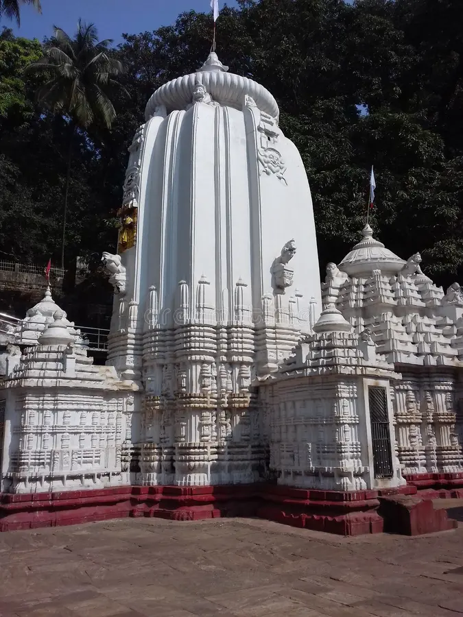
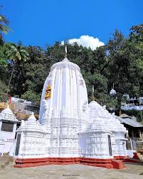

Kapilash Temple


Kapilash Temple
Kapilash Temple, also known as Mahadev Chandrashekhar Temple, is situated in the north eastern part of Dhenkanal town, Odisha, India at a distance of 26 km from the district headquarters.
Location and architecture
The temple is situated at a height of about 2239 feet from sea level. The main tower of the temple is 60 feet tall. There are two approaches to the temple. One is by climbing 1352 steps and the other is thru Barabanki or travelling by the twisting way. King Narasinghdeva I of Ganga Dynasty constructed the temple for Sri Chandrasekhar in 1246 CE as indicated in the Kapilash temple inscription.[2] In the left side of the temple the Payamrta Kunda and in the right side the Marichi Kunda exist. The temple has a wooden Jagamohana. Sri Ganesh, Kartikeya, Gangadevi, etc. are found in the temple.
Patita pavana Jagannath is installed in the temple as the Parsa Deva. Lord Vishwanath temple is also situated in Kapilash. According to some scholars this temple is older than the Chandrasekhar temple, hence it is known as Budha Linga. There are many legends about Kapilash pitha and its significance. Tradition describes it as the ashram of Kapila, to some scholars it is the second Kailash of Lord Shiva. Shridhar Swami who wrote commentary on Bhagavata Purana stayed there. There are some monasteries in the premises.
Temple robbery
Three ancient idols were stolen from the temple premises in November 2015.[3] The three stone ancient idols were stolen from near the entrance of the famous temple, they were statues of Lord Ganesh, Goddess Durga and Goddess Bhairavi.